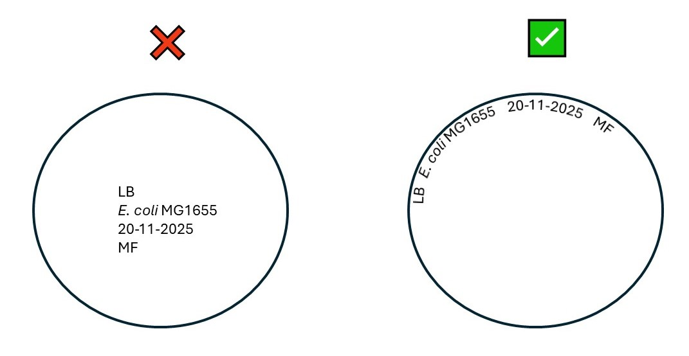
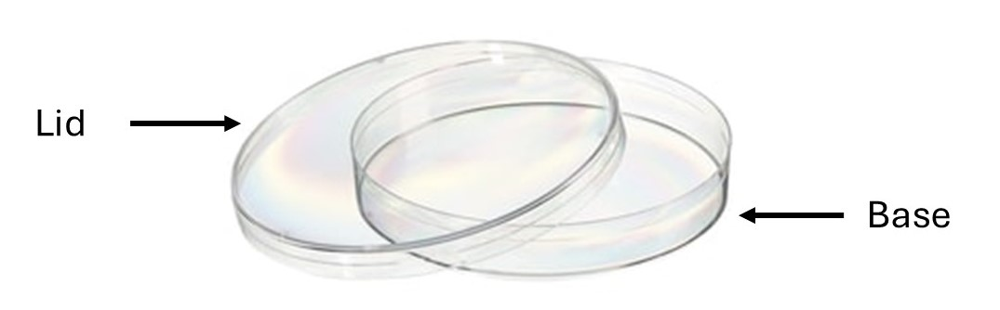

5 Good Laboratory Practice
6 Good Lab Practice
Many of the principles for working in a microbiology lab are the same as those used in any other biomedical research lab. These are transferable skills, which are useful for a number of different careers.
Good lab practice is a cornerstone of biomedical research: it helps to ensure that results are reproducible, and is especially crucial for any clinical or therapeutic work.
6.1 Keeping a Laboratory Notebook
It is essential to keep an accurate record of experiments, with details of every experiment performed, the data collected, and the data analysis that was performed. It is just as important to keep a lab notebook for experiments performed in silico as it is for experiments performed at the lab bench.
You should be able to come back to your notebook six months later, read your notes, and be able to recreate the experiment/understand the analyses that you performed. Human memory is fallible and it is important to keep clear, accurate records.
Moreover, an appropriately kept lab notebook is a legal document, important for protecting your intellectual property. You should therefore be in the habit of keeping your lab notebook up to date and accurate.
6.1.1 Some guidelines for keeping a good lab notebook:
Your notebook may be kept in the form of a physical notebook (kept on paper) or an electronic notebook. The former should be written in clearly and legibly, using indelible ink. The latter should be saved often, with backup copies stored securely.
Include the date for each entry.
Each experiment should include a title, a hypothesis or aim, a brief description of the background, protocols and details of any reagents/equipment used, observations, and any data or statistical analysis that was performed.
Any protocols or methods should be described in enough detail that a colleague (or you in six months’ time!) can repeat the same experiment, starting from the same dataset/materials, and reach the same results.
Any mistakes should be crossed out and explained (not erased).
All data should always be recorded in your lab notebook (even “failed” experiments or “outliers”).
Increasingly, researchers are using electronic lab notebooks instead of paper ones - these are more impervious to physical destruction (e.g., chemical spills, lab fires) and often more convenient (more easily legible, searchable, etc.) However, care must be taken to ensure that the data stored in an electronic lab notebook is secure and backed up.
There are many options for lab notebooks. One popular and widely used electronic lab notebook is Benchling.
You can join Benchling by creating an account at http://benchling.com/signup
For help with Benchling, including training kits and best practice guides, please see https://help.benchling.com/hc/en-us.
6.1.2 Good Labelling Technique
It is essential that all tubes and plates be clearly and legibly labelled. You will often be working with these over a period of several weeks, and you will be unable to interpret/analyse the results from a previous week’s experiments if you have not labelled your samples correctly.
Some general guidelines for good labeling practice:
Include your initials and the date of the experiment (if directed by your instructors, also include your bench number).
If working with microorganisms, always include the species name (abbreviations, e.g. E. coli are fine).
If labeling Petri plates, label around the outside rim of the plate (do not obscure the plate as it will make it hard to count colonies!), as shown in ?fig-platelabelling. You should also be sure to label the bottom of the plate (?fig-platelid). The bottom and lid may become separated, so labeling the lid is a bad idea!
 
6.1.3 Other tips for good lab practice
Read through each protocol thoroughly before beginning an experiment. Label all tubes and prepare any reagents needed before you begin. Stay organised and keep your space clean.
Turn off your Bunsen burner (or set it to a visible orange flame) if you are not working aseptically.
Never walk away from your bench and leave a lit Bunsen burner unattended.
Never wear gloves when working with a Bunsen burner.
Pipet as accurately as possible:
- Use the correct pipet for the volume you intend to pipet and make sure it is set correctly (if uncertain, ask a demonstrator or member of staff)
- Pipet down to the first stop when drawing up liquid into the pipet; pipet down to the second stop when expelling liquid.
- Avoid bubbles when pipetting.
- Only insert the very tip of the pipet into the liquid when pipetting particularly viscous mixtures (e.g., polymerase or enzyme stocks).